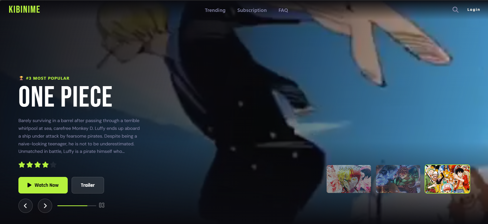

SUBJECT:
DESIGNATION: _
A BIT ABOUT ME //
4th-semester Informatics student at Universitas Pignatelli Triputra. Mostly building stuff with web design, dabbling in AI, and digging through data on the side. Still figuring a lot of it out as I go, but I try to document things properly so I don't forget how I did it last time. Open to freelance gigs or just collabing on something interesting.
Hai, I'm Wisnu Kertopati. Right now I'm splitting my attention between Web Design, AI, and Data — haven't fully picked a lane yet, honestly, and I'm not in a rush to.
What I do know is I get annoyed by stuff that's overcomplicated or just looks bad. If something I build doesn't make sense to use, I don't think it's actually finished yet.
For now I'm just trying to learn as much as I can and put it into actual projects instead of letting it sit in notes — currently on semester 4 at Universitas Pignatelli Triputra.
HTML, CSS, occasionally fighting with flexbox at 2am. I like making things look clean without overthinking it too much.
Still early days with Python and ML, honestly. Watched way too many tutorials, now trying to actually build something with it.
Mostly MySQL and messing around in Pandas. Kind of like the part where messy spreadsheets turn into something that actually makes sense.
4th semester at Universitas Pignatelli Triputra, trying to keep up with classes while building side projects on the weekends.
Where I'm most comfortable. Layouts, responsive stuff, the usual
Mostly for scripts and messing around with data/ML stuff
Can write queries without googling every five minutes now
Good enough to mock up ideas before coding them
From campus assignments, mostly. Pointers still get me sometimes
JS, React, and trying to wrap my head around TensorFlow
Kibify started as a side idea to package up software/digital products under one brand instead of scattering them everywhere. Plain HTML and CSS, nothing fancy framework-wise — just wanted it to load fast and look like a real product, not a student project.
→ Access File
Made this because I'm a One Piece fan and wanted an excuse to practice layout work. It's a small hub introducing Luffy's journey, the main arcs, and the crew — nothing too deep, just something fun for fans poking around the series for the first time.
→ Access File— end of operation log —
CHANNEL STATUS: OPEN
Got a project in mind, want to collab, or just wanna chat about tech in general?
Hit me up below, I usually reply pretty quick.